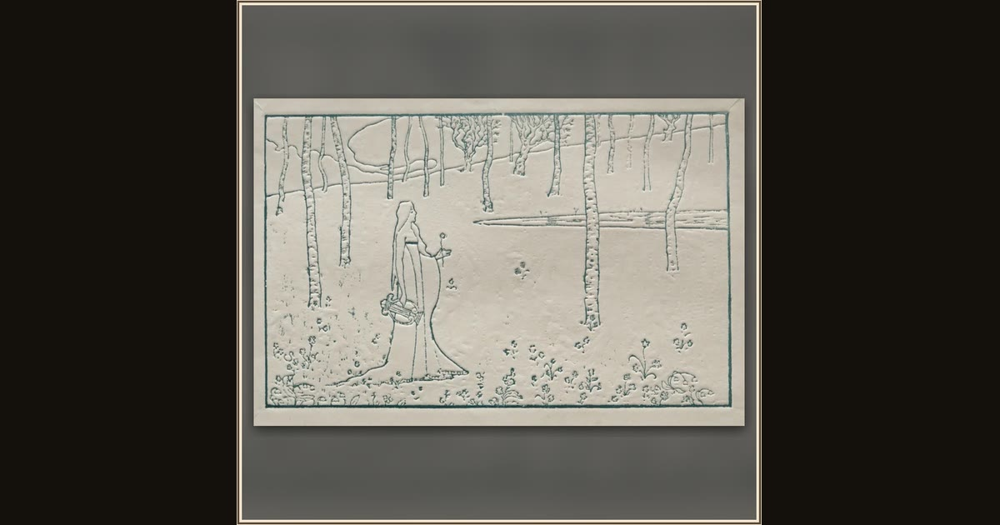

Sappho
Maurice Dumont (French, 1870–1899) · 1895 · cma
Dumont's print shows Sappho walking through a grove of birch trees among flowers, holding a flower and carrying her lyre, the instrument her lines measure sweetness against. (115) Explore its place in Sappho's Poems and Fragments, Fragments 106–115, section 10